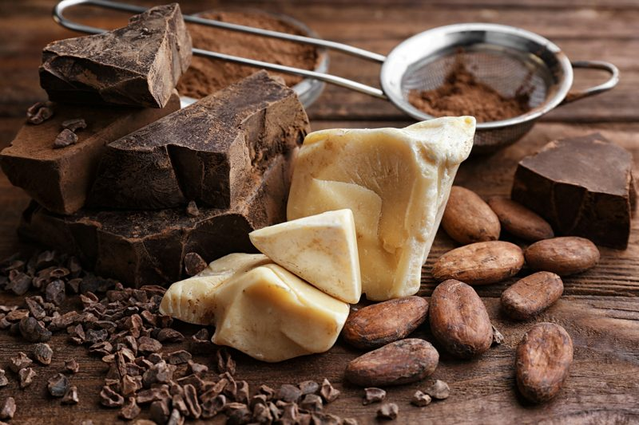

Cacao Butter
What is cacao butter?
- RAW Cacao butter is edible and possesses an extraordinarily rich, delicious chocolate aroma.
- Cacao butter, also known as cocoa butter, is a pure vegetable fat that’s extracted from the cacao bean.
- Cocoa butter is one of the most stable fats known, containing natural antioxidants that prevent rancidity and give it a storage life of two to five years.
- Add a piece of this butter to your favorite smoothie, dessert, ice cream or chocolate creation. Because it has not been damaged by heat, cacao butter melts easily and blends nicely into any type of recipe.
- In its solidified form, cacao butter looks like white chocolate, minus the sweetness.
- Cacao Butter may be used as a skin moisturizer. It may be used as (or in conjunction with) a massage oil.
- Stir some into agave syrup, maple syrup or honey for a luscious raw chocolate syrup, or make a remarkably rich pudding by combining a tablespoon of raw cacao butter, two tablespoons of cocoa powder, a medium avocado and a few drops of vanilla extract in a food processor.

Where does it come from?
- It is the pure oil of the cacao bean.
- Cacao Butter is the source of white chocolate.
Rev up the Neurotransmitters!
- Serotonin – Cacao raises the level of serotonin in the brain; thus acts as an anti-depressant, helps reduce PMS systems, and promotes a sense of well-being.
- Endorphins – Cacao stimulates the secretion of endorphins, producing a pleasurable sensation similar to the “runner’s high” a jogger feels after running several miles.
- Phenylethylamine – Found in chocolate, phenylethylamine is also created within the brain and released when we are in love. Acts as a mild mood elevator and anti-depressant, and helps increase focus and alertness.
- Anandamide – Anandamide is known as the “bliss chemical” because it is released by the brain when we are feeling great. Cacao contains both N-acylethanolamines, believed to temporarily increase the levels of anandamide in the brain, and enzyme inhibitors that slow its breakdown. Promotes relaxation, and helps us feel good longer. (source)
What can I do with raw organic cocoa butter?
- Make chocolate candies and bars.
- Create creamy chocolate ice cream.
- Mix it with raw cocoa powder and dip berries in it.
- Combine it with raw agave nectar or honey for chocolate syrup.
- Make chocolate pudding by blending it with cocoa powder & avocado.
- Add it to your superfoods (goji, maca, etc.) for an extra nutrient boost.
- Massage it into your skin.
- And much more!
How to use raw cacao butter:
- You will need to melt the cacao butter before adding it to any recipe. The best way to do this is by grating it into small pieces. This will speed of the melting time since it will all be the same size.
- Place the grated butter in a glass dish and slide into the dehydrator. Set the temperature to 145 degrees (F). it won’t be in there too long so that temp will be ok. If you are comfortable with that temp, reduce to 115 degrees (F).
- Check on the butter occasionally and give it a quick stir.
- Once all melted, it is ready to use. It will reharden once it cools off.
- 1 cup of shredded cacao butter = 1/3 cup melted.
Please keep in mind this is an ingredient and not meant to be eaten as is.
© AmieSue.com